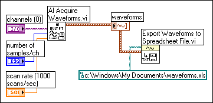

Use the Write Waveforms to File and Export Waveforms to Spreadsheet File VIs to send waveforms to files. You can write waveforms to spreadsheet, text, or datalog files.
If you expect to use the waveform you create only in a VI, save the waveform as a datalog file (.log).
The following VI acquires multiple waveforms, displays them on a graph, and writes them to a spreadsheet file.

You also can use the Storage/DataPlugin VIs or the Write To Measurement File Express VI to write waveforms to files.